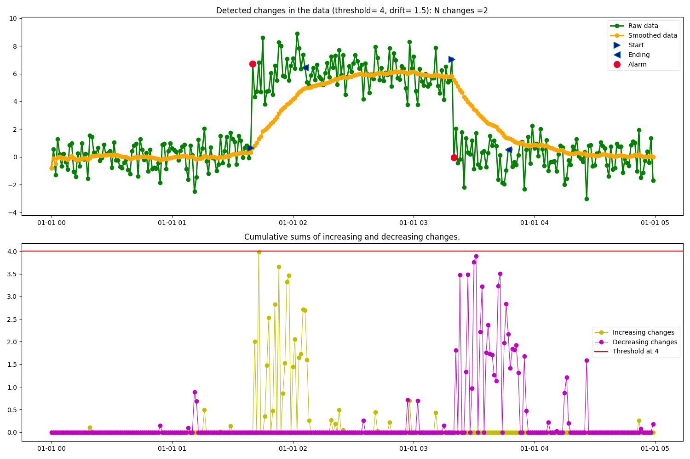
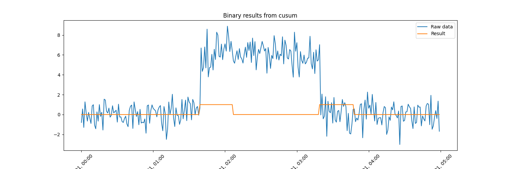

Note
Go to the end to download the full example code.
Change Point Detection with Cusum
Example of change point detection based on the cusum algorithm. We use synthetic data generated from a standard normal distribution of mean 0 and variance 1 with a shift in some of the datapoints to simulate a change in the mean of the data.
In the figure below it can be observed how the Cusum algorithm identifies increasing and decreasing change point segments. The input parameters used by the algorithm in this example are:
threshold = 4 → Specifies the amplitid threshold for the change in data.
drift = 1.5 → Specifies the drift term that prevents any change in the absence of change.
alpha = 0.05 → Specifies the smoothing factor of the data.
detect = “both” → Specifies the type of changes to detect: both increasing and decreasing.
predict_ending = True → Predicts the end point of the change.
- plot_cusum = True → Plots 2 figures containing the following data:
Raw data, smoothed data, detected change points, start of the change and end of the change (if ending = True).
Cumulative sums for increasing and decreasing changes.
- 
- 
import matplotlib.pyplot as plt
import numpy as np
import pandas as pd
from matplotlib.dates import DateFormatter
from indsl.detect.cusum import Cusum
# generate synthetic data with shift
y = np.random.randn(300)
y[100:200] += 6
index = pd.date_range(start="1970", periods=300, freq="1min")
raw_data = pd.Series(y, index=index)
# get cusum results and plot the intermidiate figures
res = Cusum(raw_data, threshold=4, drift=1.5, detect="both", predict_ending=True).cusum(plot_cusum=True)
# Plot the raw data and the resulting binary pd.Series returned from the cusum
fig, ax = plt.subplots(1, 1, figsize=[15, 5])
ax.plot(raw_data, label="Raw data")
ax.plot(res, label="Result")
ax.set_title("Binary results from cusum")
_ = ax.legend(loc="best")
# Formatting
myFmt = DateFormatter("%b %d, %H:%M")
ax.xaxis.set_major_formatter(myFmt)
ax.xaxis.set_major_formatter(DateFormatter("%b %d, %H:%M"))
_ = plt.setp(ax.get_xticklabels(), rotation=45)
Total running time of the script: (0 minutes 0.518 seconds)